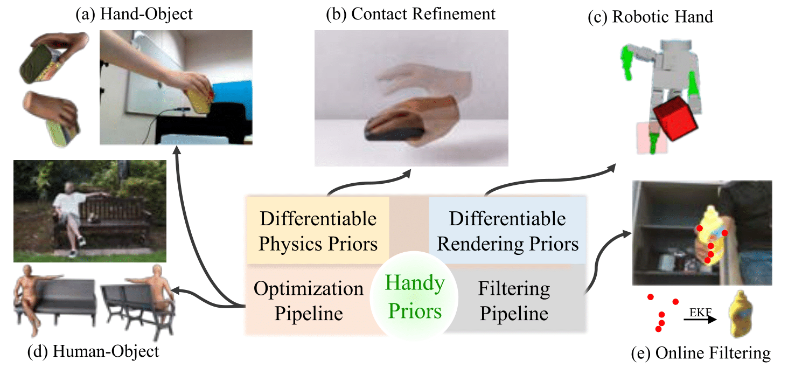

Abstract
Various heuristic objectives for modeling handobject interaction have been proposed in past work. However, due to the lack of a cohesive framework, these objectives often possess a narrow scope of applicability and are limited by their efficiency or accuracy. In this paper, we propose HANDYPRIORS, a unified and general pipeline for pose estimation in human-object interaction scenes by leveraging recent advances in differentiable physics and rendering. Our approach employs rendering priors to align with input images and segmentation masks along with physics priors to mitigate penetration and relative-sliding across frames. Furthermore, we present two alternatives for hand and object pose estimation. The optimization-based pose estimation achieves higher accuracy, while the filtering-based tracking, which utilizes the differentiable priors as dynamics and observation models, executes faster. We demonstrate that HANDYPRIORS attains comparable or superior results in the pose estimation task, and that the differentiable physics module can predict contact information for pose refinement. We also show that our approach generalizes to perception tasks, including robotic hand manipulation and human-object pose estimation in the wild.
Method
An overview of our optimization and filtering pipelines. We provide two alternatives for utilizing the differentiable priors. Given the image and the estimation from previous frames, (a) the optimization pipeline first initializes the poses with pre-trained networks and then minimizes the rendering and physics losses from the differentiable operators; (b) the filtering pipeline can take some simple observations and use Extended Kalman Filter (EKF) to update the state estimation. EKF requires differentiable physics and rendering to model the system and runs much faster than the optimization pipeline.
Results
Optimization Process of the Pose Estimation


Tracking
Contact Optimization
Human-Object Pose Optimization
Phosa [1]
w/ Rendering term

w/ Rendering+Physics terms
Reference
[1] Zhang, Jason Y., Sam Pepose, Hanbyul Joo, Deva Ramanan, Jitendra Malik, and Angjoo Kanazawa. "Perceiving 3d human-object spatial arrangements from a single image in the wild." In ECCV 2020.
BibTeX
@InProceedings{zhang2023handypriors,
author = {Shutong Zhang and Yiling Qiao and Guanglei Zhu and Eric Heiden and Dylan Turpin and Jingzhou Liu and Ming Lin and Miles Macklin and Animesh Garg},
title = {HandyPriors: Physically Consistent Perception of Hand-Object Interactions with Differentiable Priors},
booktitle = {Arxiv},
year = {2023},
}